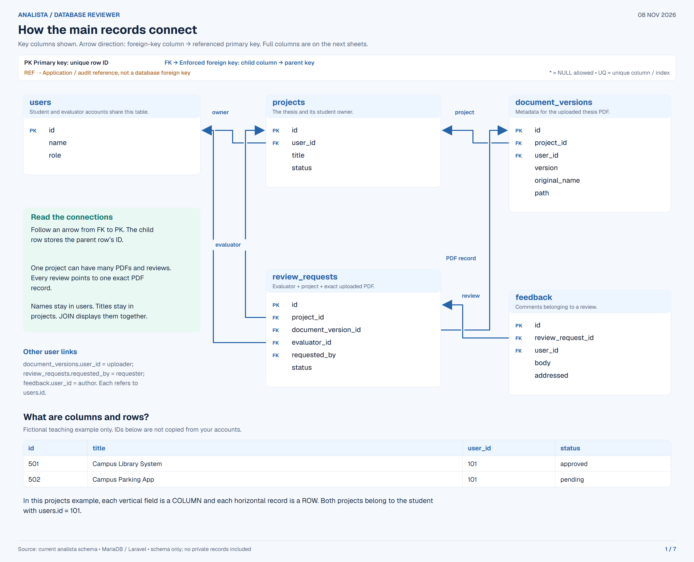
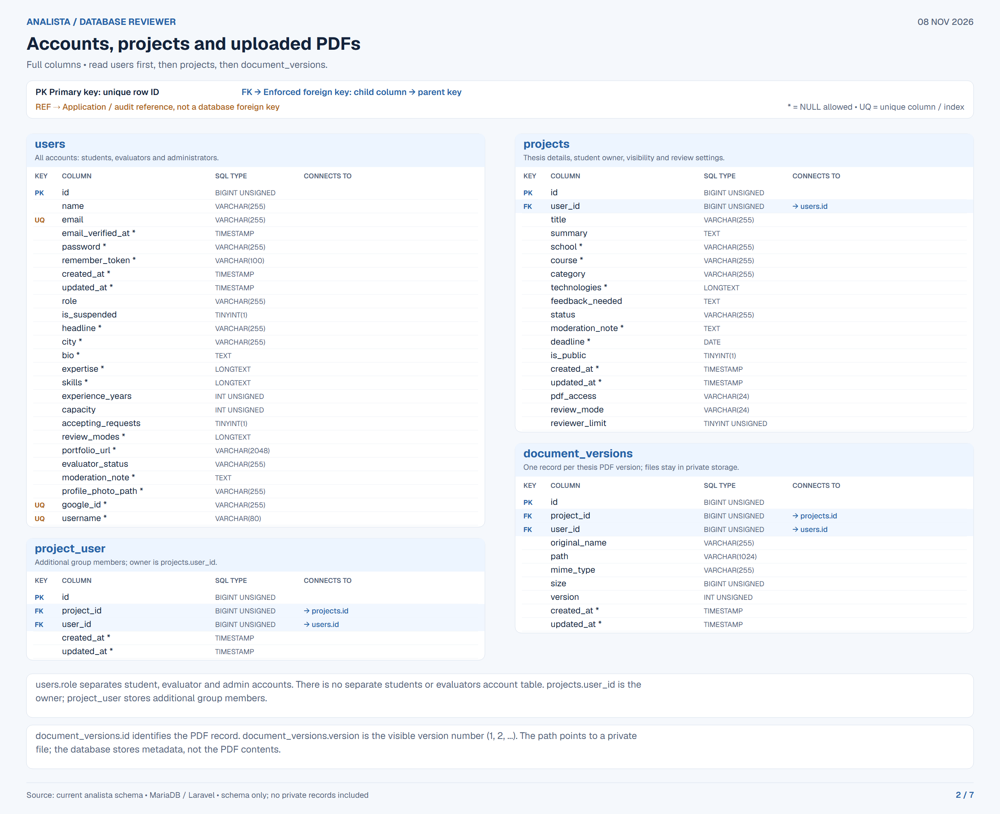
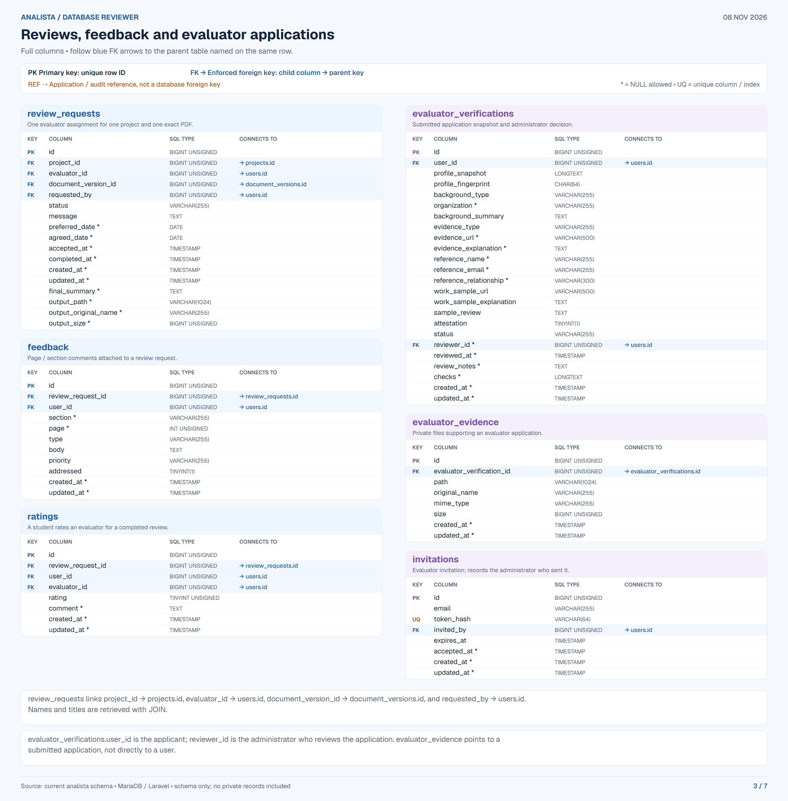
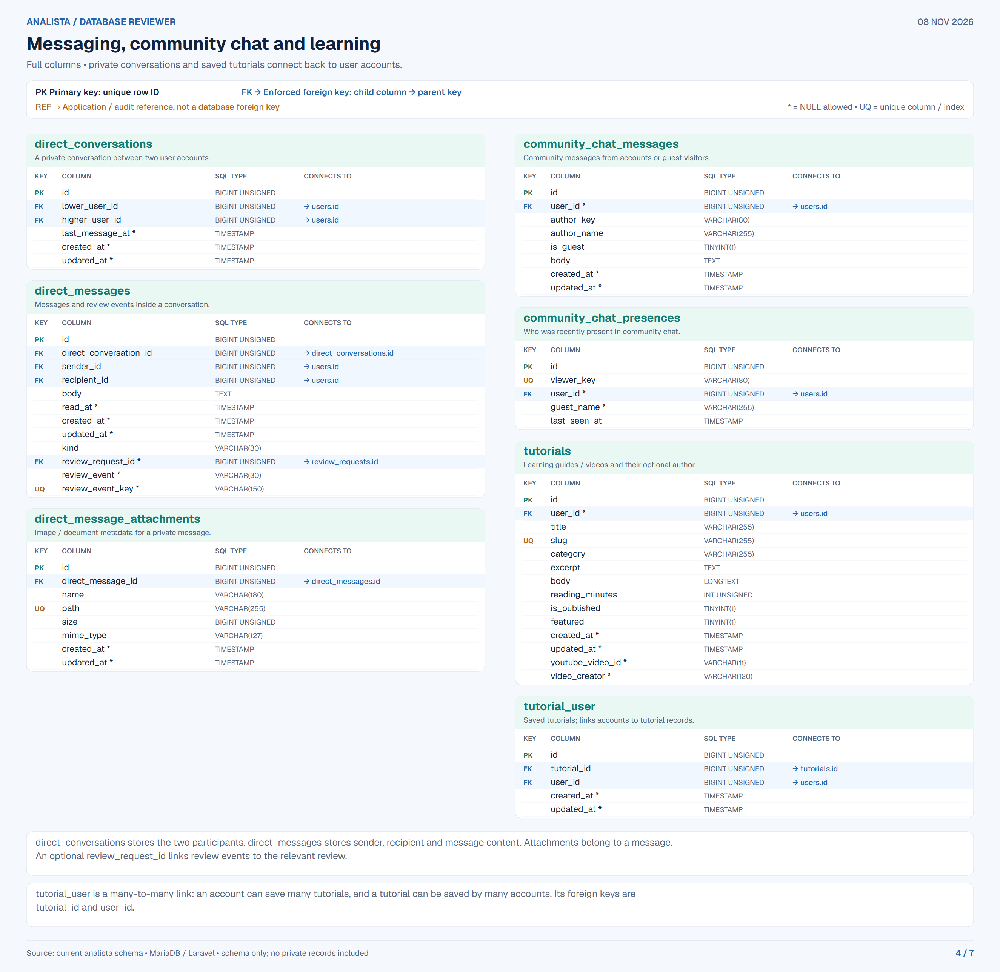
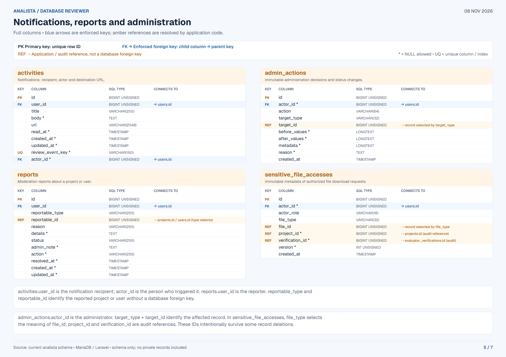
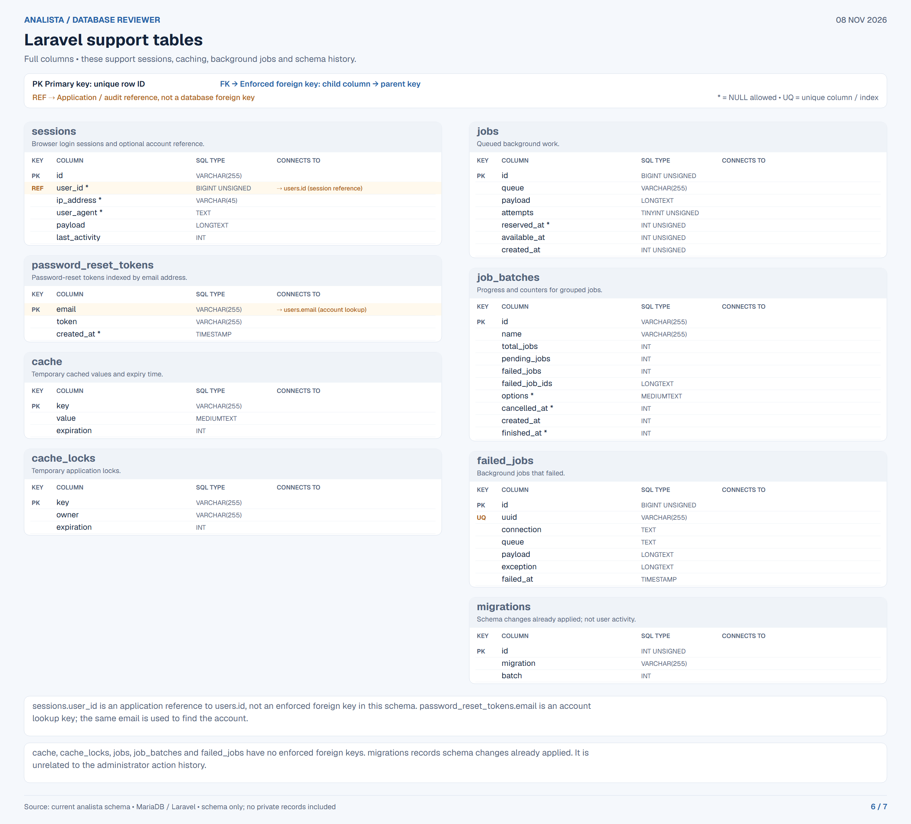
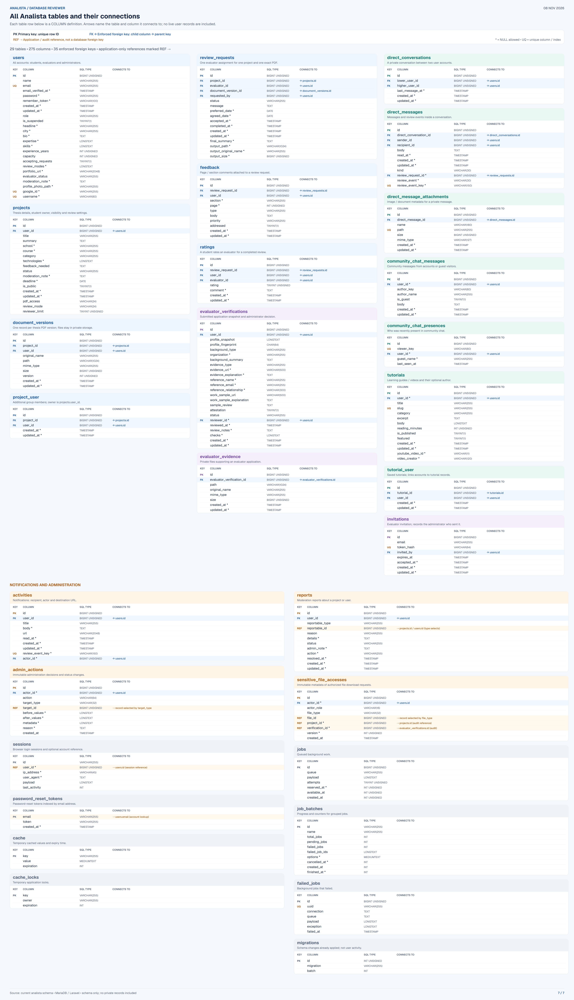

ANALISTA / DATABASE REVIEWER · NOVEMBER 8, 2026
Understand how your tables connect.
29 tables, 275 columns and 35 foreign keys. Start with the PDF: six beginner lessons with SQL examples, followed by all seven table diagrams. Individual high-resolution PNGs are also available below. Example records are fictional.
Download the reviewer PDF (13 pages)

2. Accounts, projects and uploaded PDFs
Download PNG

3. Reviews, feedback and evaluator applications
Download PNG

4. Messaging, community chat and learning
Download PNG

5. Notifications, reports and administration
Download PNG

6. Laravel support tables
Download PNG
